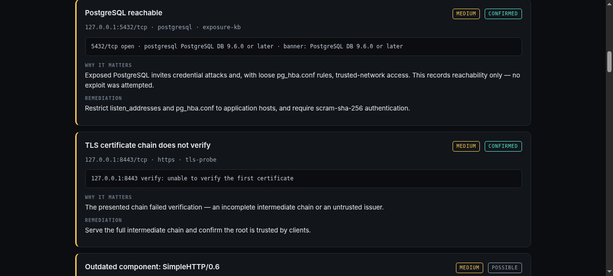
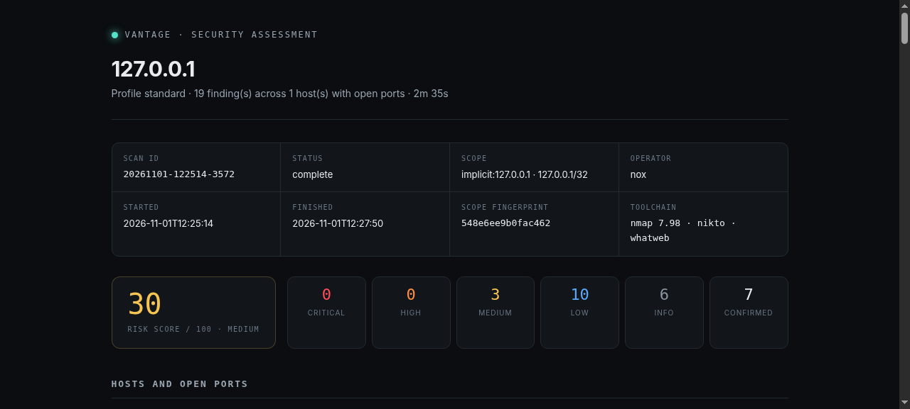
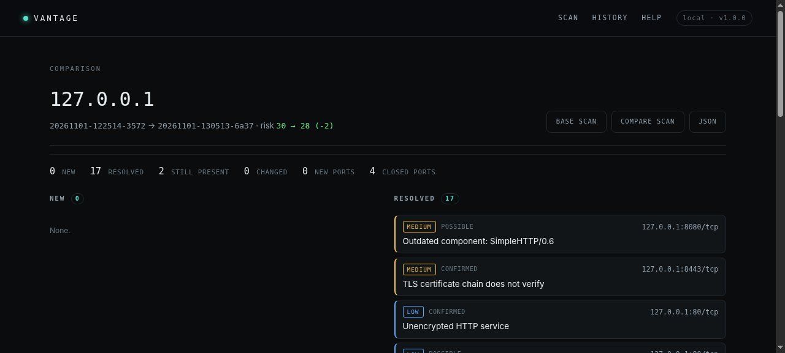

01The problem I had
I was running nmap by hand, pasting output into notes, and each report came out with the same flaw: a list of observations with no way to tell which ones were real. OpenSSH 7.2 is not a vulnerability. A nikto line about a missing header is not a vulnerability either — nikto says that about almost everything.
Worse, the tooling encouraged bad habits. Default nmap script runs are
loud, --script-args unsafe=1 can wedge embedded devices, and
nothing stops a typo in a CIDR from becoming /8 aimed at
someone else's network. I wanted a tool where the careless path was
harder than the careful one.
02What it does
Seven phases, each one optional and each one recorded, so the report can say what was not looked at:
| Phase | Runs | Produces |
|---|---|---|
| Discovery | nmap -sn | Which addresses answer at all |
| Ports | nmap -sT / -sS | Open TCP ports with state and reason |
| Services | nmap -sV | Product, version, banner per port |
| Vulnerabilities | nmap --script vuln | NSE results, graded by the answer given |
| Web | whatweb, nikto | Stack fingerprint, headers, exposed files |
| TLS | openssl s_client | Cert validity, trust, hostname, TLS 1.0/1.1 |
| Analysis | built in | Findings with severity, confidence, fix |
03The part that matters: confidence
Every finding carries two independent axes. Severity is how bad it would be if true. Confidence is how sure this scan is that it is true. Collapsing them is what makes security reports untrustworthy, and it is the one thing this tool refuses to do.
| Confidence | Means | Comes from |
|---|---|---|
| confirmed | A check returned a positive answer | NSE State: VULNERABLE, a completed TLS 1.0 handshake, an open port |
| likely | Strong signal, one manual step away | State: LIKELY VULNERABLE, certificate mismatch heuristics |
| possible | Heuristic hit, verify before acting | All nikto output, end-of-life banners |
| informational | Context, not a weakness | Server banners, technology fingerprints |

Concretely: a version banner never produces "vulnerable". It produces
possible, with a sentence explaining that distributors backport
fixes without changing the number. State: NOT VULNERABLE and
script errors produce no finding at all — a check that did not answer has
not told us anything.
04The guard
Scanning systems you do not own is a criminal offence in Germany (§202a–c StGB) and most other places, and "it was only a scan" is not a defence. So the tool is built around a gate it cannot be talked out of:
- No
--authorizedstatement means no scan — non-interactive runs exit with code 2 instead of proceeding. - A declared scope is enforced on the resolved address, so DNS cannot smuggle a target past it. Out of scope is refused before a packet leaves the machine.
- Public addresses are refused unless explicitly allowed; ranges above a host ceiling are refused so a typo cannot become an incident.
- Every decision — authorised and refused — is appended to a local audit log with operator, target, scope fingerprint and statement.
A Guard object is the only thing the scanning engine accepts,
and it can only be produced by the gate. There is no bypass path to
remember to close later.
No credentials, no exploitation, no evasion, no unsafe=1.
The tool reports reachability and posture; it does not break in. That is
a design constraint, not a backlog item.
05Two front ends, one engine
The CLI is the primary interface — rich tables, streaming phase output,
--json for pipelines and --fail-on high to gate
CI. The web console exists for the case where someone else should be able
to read the result without a terminal: same engine, same scope checks, one
background thread per scan and a polling endpoint, no websockets and no
frontend build step.
Both produce the same artefacts: a self-contained HTML report, a Markdown one for notes, JSON for tooling, all stored in SQLite so history is queryable months later.

06Strategies: one engine, nine questions
The first version had three profiles — quick, standard, deep — which is a dial, not a decision. Real work starts with a question, and the question picks the toolset: who is alive? wants discovery and nothing else; are my certificates in order? wants TLS and nothing else; is my web app exposing itself? wants headers, nikto and a certificate.
So a strategy is now a named phase list, and nothing else.
That constraint is what keeps it honest: a strategy cannot describe a phase
it will not run, and --only web,tls or --no-vuln
edit the same list instead of toggling independent flags that drift apart
over time.
| Strategy | Runs | Answers |
|---|---|---|
| discover | host discovery only | Which addresses answer at all? |
| quick | top 100 ports, versions | What is this host, roughly? |
| gentle | same, -T2, one host at a time | Will this survive a scan? |
| inventory | top 1000 ports, versions | What runs where? |
| hardening | + TLS | Are certificates and protocols in order? |
| web | + nikto, whatweb, TLS | Is the HTTP surface exposing itself? |
| vuln | + NSE vulnerability scripts | Is this known-vulnerable? |
| standard | everything | The full picture |
| deep | all 65535 ports | What is it hiding? |
07Watching it happen
A scanner that prints nothing for four minutes feels broken. The CLI now
redraws a dashboard in place: progress bar, phase timeline with per-phase
durations, hosts and ports counted as nmap reports them, the last three
findings, and the most recent tool message. The web console streams the
same telemetry — counters, phase rows, and an asset feed filling with
host:port chips while the scan runs.
That feature found a real bug that had been there all along: I had been
sending nmap's XML to stdout with -oX -, which makes nmap
suppress every progress line. The scan was correct, the telemetry was
silently dead, and nothing failed. Switching the XML to a temporary file
restored the stream — and taught me that "it produced results" is not the
same as "it did what I asked".
The same data makes change tracking possible: findings carry a stable key, so two scans of the same target line up entry for entry. Comparing them answers the question a report never can — did anything change since last week?

08What I got wrong first
The first scoring model added up severity weights on a log curve. It rated twenty low findings identically to one confirmed critical — a real bug my own test suite caught. The fix was a per-finding floor: one confirmed critical now scores 82 on its own, because those two situations are not the same risk and a reader should not have to hold that in their head.
The second lesson was about timeouts. --script-timeout is
per-script, per-port, so a careless value turns a two-minute scan into
twenty. It is now 90 seconds, and the profile estimates in the docs were
rewritten to match what I measured rather than what I assumed.
09What's next
- UDP coverage — SNMP and mDNS are still invisible to it.
- A verifier step that re-checks a finding before it is promoted from possible to confirmed.
- Scheduled scanning with the diff as the delivery mechanism: scan nightly, report only what changed.
It runs from a checkout with no install:
./vantage.py scan 127.0.0.1 --authorized — or
./vantage.py doctor to check which tools are present.
Source and the full documentation are on
GitHub.